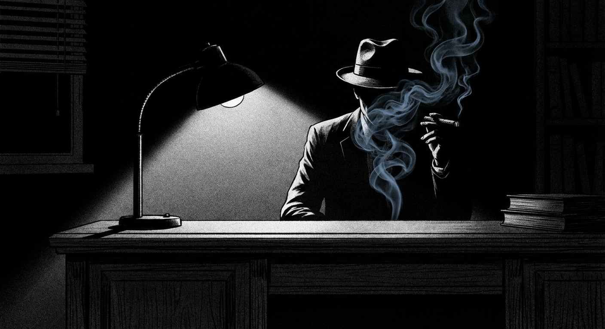
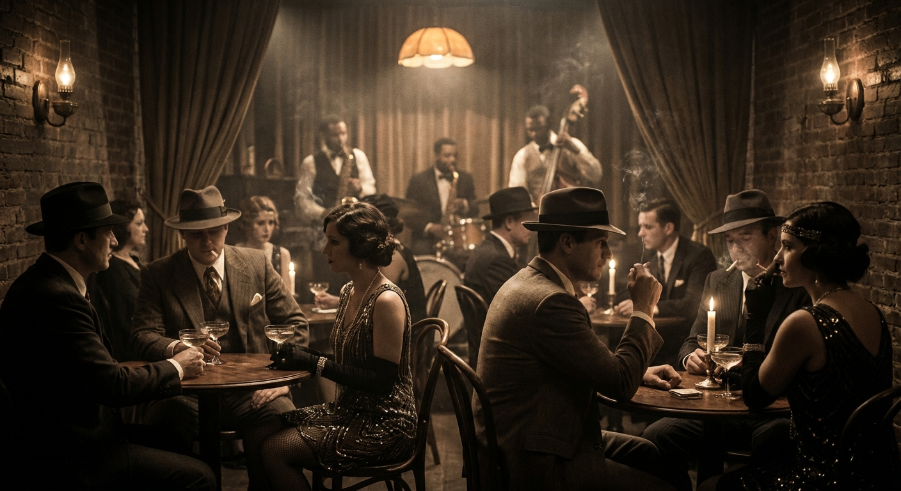
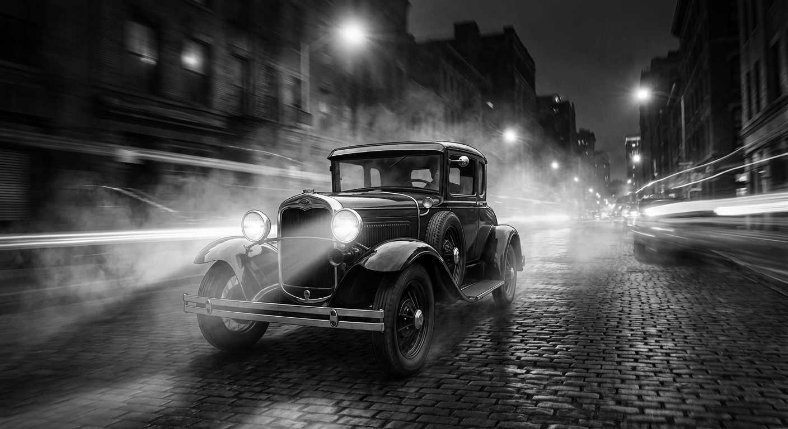
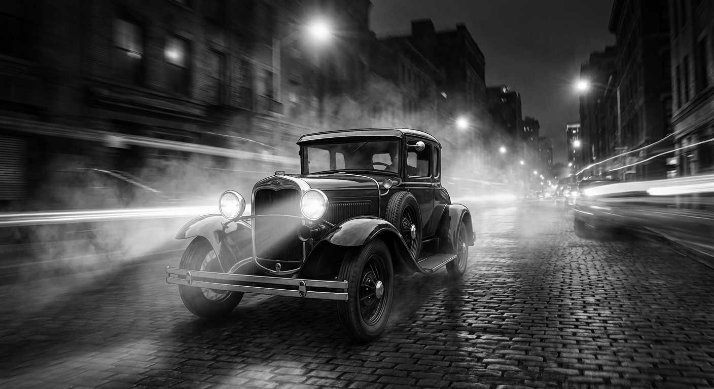

OMERTA
PROHIBITION ERA MAFIA GUIDE
■ 基本背景
Roleplay Context
1920年、禁酒法（Volstead Act）施行。アメリカは乾いた国となったが、喉の渇きは消えなかった。
裏市場は肥大化し、密造・密輸を牛耳る犯罪組織が急速に台頭。マフィアの抗争は日常となり、縄張り（Territory）とルート（Route）が血で購われる最重要資産となった。
トンプソン・サブマシンガン（トミーガン）の咆哮が、夜の街に響き渡る。

■ 組織運営
HIERARCHY
- Boss - 組織の頂点
- Underboss - ナンバー2
- Capo - 幹部
- Soldier - 兵隊
資金源は密造酒、スピークイージー（違法酒場）、賭博、売春、保護料。そして政治家への賄賂。
現場では“連絡係（Runner）”や“運び屋（Bootlegger）”が実務を支える。

■ 隠語 / SLANG
Speakeasy
隠し酒場
Moonshine
密造酒
Bootleg
密輸・密造
Hit
殺しの依頼
Syndicate
犯罪組織連合
"Business is business."
抗争や裏切りを正当化する常套句
■ 振る舞い
多くのギャングはタクシー会社や葬儀屋など、「合法的な表の顔」を持つ。
組織を「ファミリー」と呼ぶが、それは血縁ではなく利益の共同体だ。
契約は紙ではなく、相手の弱み（Dirt）で縛る。報復は「倍返し」が鉄則。
裏切り者（Rat）には、死よりも惨い制裁が待っている。

■ 弱みで縛る手口
HOW TO CONTROL
01. 共犯にする
密造設備を共同購入させる、賄賂を一緒に渡させる。「バレれば一蓮托生」の状況を作る。
02. 証拠を握る
不正取引の録音、署名入り裏帳簿、現場写真。これらは裏金庫で厳重に管理される。
03. 家族を人質に
直接的な誘拐ではない。「家族の安全のため」という名目で保護料を支払わせる。
04. 借りを作る
摘発情報を流す、トラブルを仲裁する。恩を売って逃げられないようにする。
05. 黒い噂
浮気、借金、ギャンブル。名声を破壊するスキャンダルは強力な武器になる。
06. 損得の構造
共有投資や専門領域への依存。裏切れば全てを失うシステムを構築する。
■ ディテール
 

ITEMS & STYLE
- CAR
- フォード・モデルA、キャデラックV-16
- LIQUOR
- カナダ産ウイスキー、ラム、密造ジン
- FASHION
- スリーピーススーツ、フェドラ帽、懐中時計
- SLANG
- 金＝Dough, Scratch / 警官＝Copper
ACTIONS
- 秘密の酒場での取引
- 武器を隠しての会合
- 裏切り者の探索
- 敵対縄張りの偵察
- 賄賂交渉
- 密造場の警備・強襲